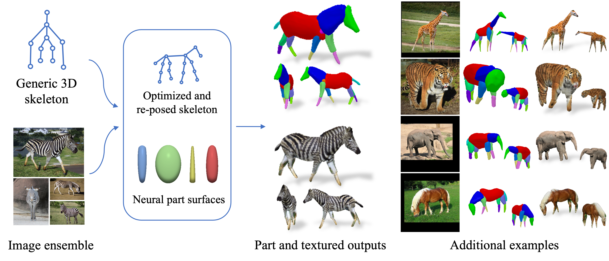
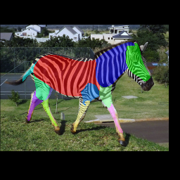

Framework Overview

Given sparse images of an articulated class and a generic 3D skeleton, we optimize the shared skeleton and neural parts as well as the instance-specific camera viewpoint and bone transformations. Our method is able to produce high-quality outputs without any pre-defined shape model or instance-specific annotations.
Abstract
Creating high-quality articulated 3D models of animals is challenging either via manual creation or using 3D scanning tools. Therefore, techniques to reconstruct articulated 3D objects from 2D images are crucial and highly useful. In this work, we propose a practical problem setting to estimate 3D pose and shape of animals given only a few (10-30) in-the-wild images of a particular animal species (say, horse). Contrary to existing works that rely on pre-defined template shapes, we do not assume any form of 2D or 3D ground-truth annotations, nor do we leverage any multi-view or temporal information. Moreover, each input image ensemble can contain animal instances with varying poses, backgrounds, illuminations, and textures. Our key insight is that 3D parts have much simpler shape compared to the overall animal and that they are robust w.r.t. animal pose articulations. Following these insights, we propose LASSIE, a novel optimization framework which discovers 3D parts in a self-supervised manner with minimal user intervention. A key driving force behind LASSIE is the enforcing of 2D-3D part consistency using self-supervisory deep features. Experiments on Pascal-Part and self-collected in-the-wild animal datasets demonstrate considerably better 3D reconstructions as well as both 2D and 3D part discovery compared to prior arts.
Results on in-the-wild images
(Left to right: input images, part outputs, textured outputs, animations)
Animation

(Left to right: input images, predicted masks, part animations, textured animations)
Bibtex
@inproceedings{yao2022lassie,
title={LASSIE: Learning Articulated Shape from Sparse Image Ensemble via 3D Part Discovery},
author={Yao, Chun-Han
and Hung, Wei-Chih
and Li, Yuanzhen
and Rubinstein, Michael
and Yang, Ming-Hsuan
and Jampani, Varun},
booktitle={NeurIPS},
year={2022}
}